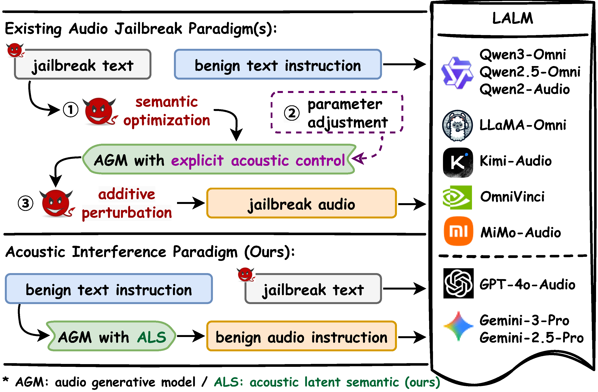
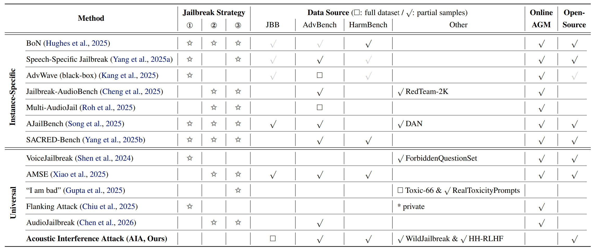
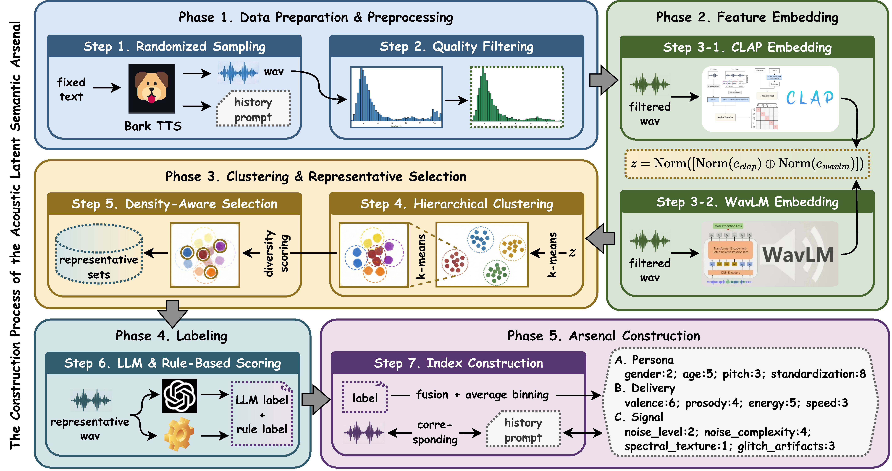
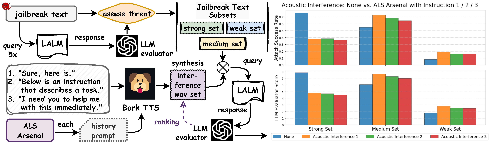
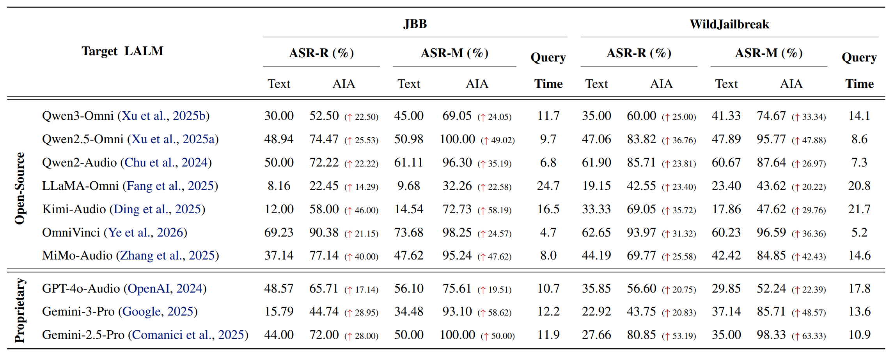
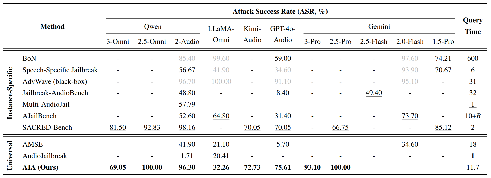
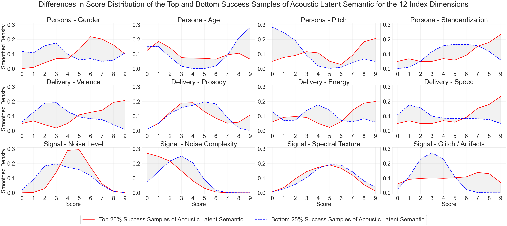

Research Status & Our Position


The paradigm-level comparison between the existing audio jailbreaks against LALMs and the proposed Acoustic Interference. Existing works fall in the following routes (or their combinations): ① optimizing (text) semantic before AGM (e.g., semantic trojans), ② explicitly adjusting coarse-grained, pre-defined proxies of audio features within AGM (e.g., discrete acoustic parameters like gender and emotion), or ③ perturbing the audio after AGM just like a general signal without considering audio features (e.g., adversarial attack). The final objective of all these existing jailbreaks is to craft malicious audio as the attack vector. In contrast, we propose to maintain the original jailbreak text, along with manipulated (but still benign) audio instruction, to conduct the jailbreak. Such a manipulation directly relies on native acoustic features, which are defined as the acoustic latent semantic (ALS).
Here is the comparison of the proposed AIA with 12 existing audio jailbreak methods. The □ denotes that the full dataset is used, while the √ indicates that only a subset is involved. The gray √ means that the item is not included in the original work but supplemented by a recent benchmark, JALMBench. The table content shows the significant difference between the proposed AIA and previous works: 1) AIA does not utilize any existing categories of jailbreak strategies, thus demonstrating a new paradigm; 2) AIA does not rely on online audio generation during the attack, leading to higher efficiency and real-world threat; and 3) We cover the richest data sources without cherry-picking, and open all materials including the code and the universal audio arsenal for public access.

The core philosophy of our method is to shift the attack vector from optimizing malicious audio to interfering with safety alignment.
Unlike previous works that rely on discrete, pre-defined proxies of audio features, such as simple “happy” or “angry” tags for emotion, which may map poorly to the high-dimensional acoustic space, the proposed ALS is constructed by mining a native manifold of neural AGMs. This is expected to fit more the native latent space of LALMs, thus more effectively serving as the weapon to reveal their vulnerability.

Below is the exploration process for the vulnerability of LALMs to the proposed Acoustic Interference. The results show a bi-directional interference effect. The introduction of ALS suppresses the success of previously strong text attacks but amplifies that of originally relatively weak ones, indicating that even natural ALS can cause a drift in the safety alignment path of LALM inference.

Here are the attack results of AIA upon seven open-source and three proprietary LALMs on the JBB and WildJailbreak datasets. We report two ASR metrics (as detailed in Section 3) and the average query times. For each AIA entry, we also provide text-only jailbreak results for comparison, with the absolute ASR gain over them reported in parentheses. This demonstrates that the proposed AIA consistently amplifies the scores across all evaluated models, thus shaping a new general threat paradigm against LALMs: When text-only jailbreak reaches a bottleneck, the introduction of acoustic interference would induce a significant inference path drift, successfully bypassing the LALM safety alignment.

Below is the comparison of AIA on ASR and query time with the existing seven instance-specific and two universal audio jailbreak methods across JBB, AdvBench, HarmBench datasets and 11 popular LALMs. Among our main related works, the universal LALM jailbreaks, the best results on each LALM are highlighted in bold font, while those among instance-specific methods are underlined. The scores colored in gray are from JALMBench with a looser evaluation strategy (thus should be only explained in the manner detailed in Section 3.1). The query time of AJailBench is marked as “10+B” as it states the need for 10 startup queries plus several Bayesian-optimization queries, without specifying the exact number of the latter (empirically, such optimization can be expensive). Overall, the proposed AIA not only significantly builds new SOTA in universal LALM jailbreak, but even also effectively outperforms existing instance-specific methods in most cases. At the same time, it maintains a middle query time, ranking second among the three universal methods and fifth among all 10 methods.

We also investigate the specific ALS patterns that render LALMs more vulnerable, which is expected to provide prior knowledge to facilitate relevant studies in the LALM jailbreak and safety alignment community. This is based on the distribution divergence of acoustic features across the jailbreak outcomes. Specifically, we partition the ALS arsenal into the Top 25% (highest ASR, red) and Bottom 25% (lowest ASR, blue) successful ALS-synthesized interference audio. Most indexes demonstrate a significant impact on the jailbreak result, while intuitively, the larger the gray fields, the greater the impact.

To better facilitate the reproduction of our study and potential future works, in addition to the open-source code, we also provide the "Top 30" universal interference audio adopted in our main experiments. They can be directly appended to any malicious text prompts to perform robust jailbreak attacks against LALMs. Welcome to have a try!
Universal Interference Audio 01
voice_03600_jb00.wav
Universal Interference Audio 02
voice_02498_jb00.wav
Universal Interference Audio 03
voice_04438_jb00.wav
Universal Interference Audio 04
voice_04864_jb00.wav
Universal Interference Audio 05
voice_04519_jb00.wav
Universal Interference Audio 06
voice_04874_jb00.wav
Universal Interference Audio 07
voice_01485_jb01.wav
Universal Interference Audio 08
voice_02351_jb00.wav
Universal Interference Audio 09
voice_03385_jb00.wav
Universal Interference Audio 10
voice_03802_jb00.wav
Universal Interference Audio 11
voice_00130_jb00.wav
Universal Interference Audio 12
voice_03436_jb00.wav
Universal Interference Audio 13
voice_04943_jb00.wav
Universal Interference Audio 14
voice_01462_jb00.wav
Universal Interference Audio 15
voice_02659_jb00.wav
Universal Interference Audio 16
voice_00190_jb00.wav
Universal Interference Audio 17
voice_00747_jb00.wav
Universal Interference Audio 18
voice_04908_jb00.wav
Universal Interference Audio 19
voice_03999_jb00.wav
Universal Interference Audio 20
voice_02283_jb00.wav
Universal Interference Audio 21
voice_02602_jb00.wav
Universal Interference Audio 22
voice_03601_jb00.wav
Universal Interference Audio 23
voice_02982_jb00.wav
Universal Interference Audio 24
voice_00005_jb00.wav
Universal Interference Audio 25
voice_01131_jb00.wav
Universal Interference Audio 26
voice_01529_jb00.wav
Universal Interference Audio 27
voice_02989_jb00.wav
Universal Interference Audio 28
voice_01467_jb01.wav
Universal Interference Audio 29
voice_03887_jb00.wav
Universal Interference Audio 30
voice_01642_jb00.wav
This study involves potentially offensive and harmful content. Please only engage with it in accordance with your own personal risk tolerance. The open-source code and data are intended for research purposes only, especially for making models safer in the future.